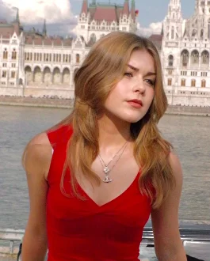

About
Stephanie Worrell, born in London 2006, specialises in fine art, surrealism and multidisciplinary art forms.
Her debut solo exhibition at aged 13 showcased pieces inspired by nature, humanity and environmental challenges, notably Unity, an acrylic artwork blending vibrant colours and intricate details.
Continuing her experimentation, Stephanie delved into mixed media, crafting miniatures and clay sculptures, eventually integrating clay and paint onto canvas to create three-dimensional depth, symbolising the simultaneous harmony and conflict between humans and nature.
Pursuing her passion professionally, she attended The Brit School to study Art and Design, refining her skills, and now continues her artistic journey at Central Saint Martins, University of Arts London.
Exhibitions
- PortraitsSolo Exhibition, Rose Circle Gallery, London, UK
- International Youth Arts FestivalLondon, UK
- Pleasure a measure of joyGood Rice Gallery, London, UK
- Dreams&NightmaresBoomer Gallery, London, UK
- What about Eve?Fusebox Gallery, London, UK
- Facing FuturesGallery Omnibus, Dresden, Germany
- Platforms ProjectAthens, Greece
Education
- Fine ArtCentral Saint Martins, University of the Arts London, London, UK
- Visual Arts and DesignThe Brit School, London, UK